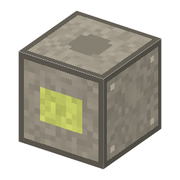

説明
①子ども 電気でフッ素を取り出す槽。フッ素はほとんど何とでも激しく反応する、とても危ないガス。
②学生 ニッケル×6＋銅＋銅ケーブル。電気 2kW・10秒。フッ化カリウム（減らない）＋黒鉛（陽極、減らない）＋フッ酸＋空のボンベ → 水素の袋、5回でフッ素のボンベ。水素の出口がいっぱいだと、ガスが混ざって事故（貯めたフッ素を失って止まる）。⚠ フッ素：GHS 酸化性ガス・高圧ガス・急性毒性（吸入）・皮膚腐食性。工業の材料としてだけ扱う。
③大人 1886年、フランスのモアッサンが、冷やした白金の U 字管でフッ素を初めて取り出した（1906年ノーベル化学賞）。それまでに何人もの化学者がフッ素の実験で体をこわした。
④ガチ フッ素はほとんどの金属やガラスを侵すが、ニッケルや銅は表面にフッ化物の薄い膜ができて守られる。陽極でフッ素、陰極で水素が出るので、2つが混ざらないように仕切る（混ざると激しく反応する）。
作り方
使い道
（このアイテムを使うレシピは無い）